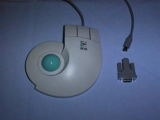
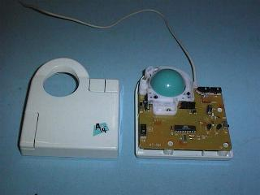

Phil Storrs PC Hardware book
The Track Ball device

This photo shows a typical Track Ball device and a PS/2 to DB9 adaptor

This photo shows the inside of a Track Ball device
Back to the Mouse chapter
Back to the opening index
Book three index